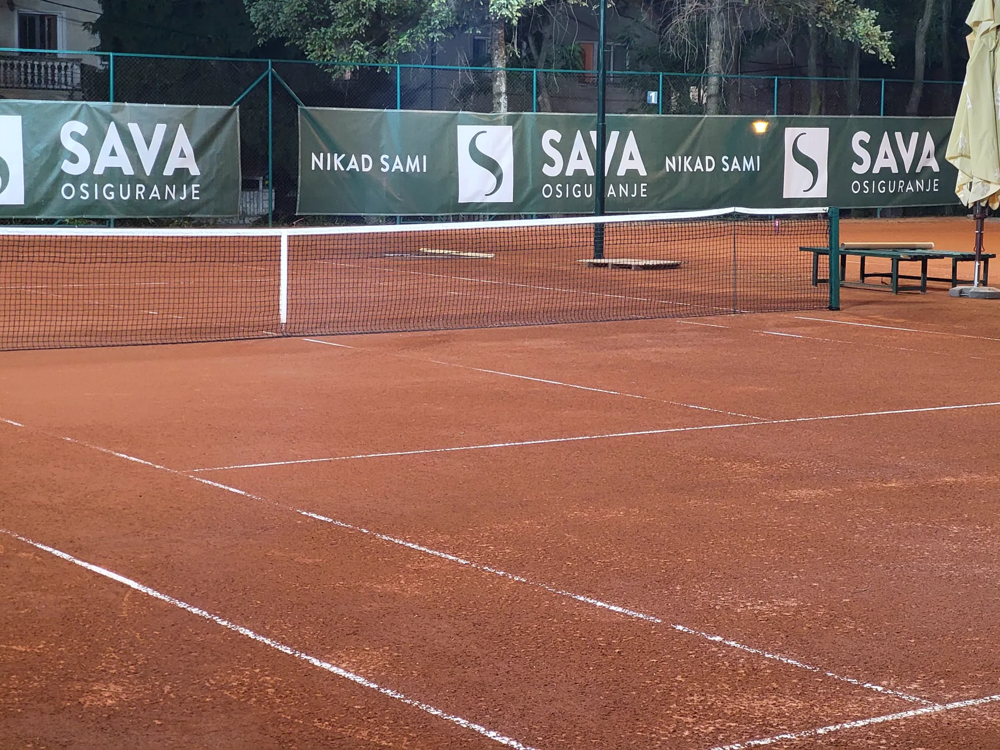
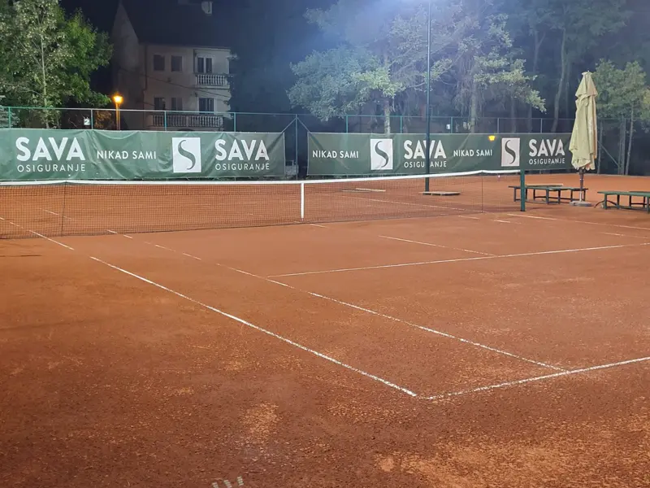
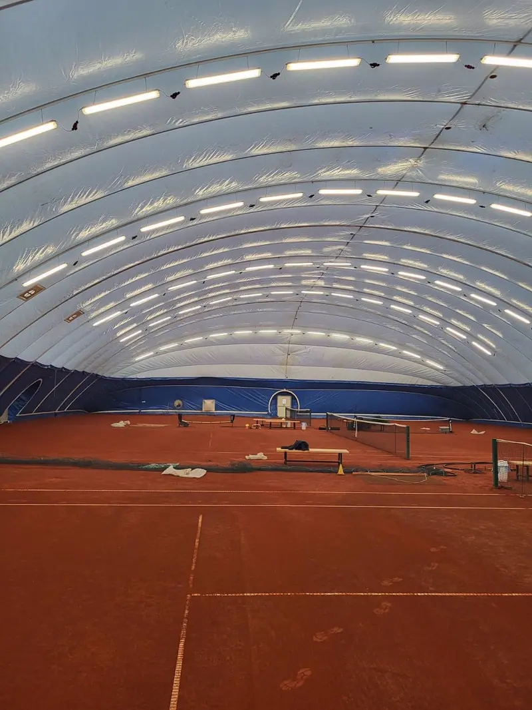
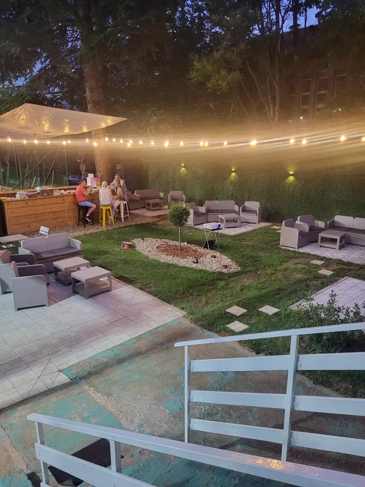
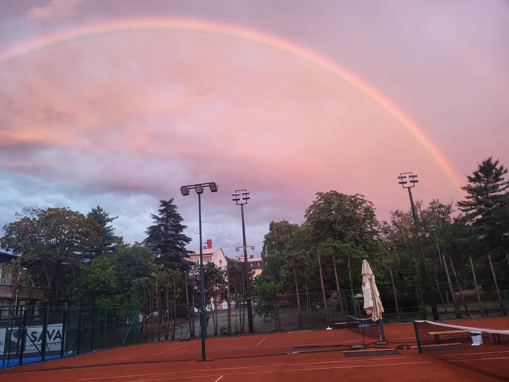

Rekreativci
Rezervišeš teren.
Igraš.
Tri šljakasta terena na Banovom Brdu, pod reflektorima do 23h i zimi pod balonom. Bez članarine, plaćaš samo teren.
- 3šljakasta terena
- 23hsvaki dan, pod reflektorima
- 12meseci godišnje, zimi pod balonom
- 1.000dinara po satu, najniža cena terena
Cenovnik
Cena po satu, za ceo teren
Cena zavisi od dana i doba dana. Najpovoljniji termini su radnim danom od 8 do 17h.
Radnim danomPonedeljak – petak
- 08 – 17h1.000 RSD
- 17 – 20h1.200 RSD
- 20 – 23h1.400 RSD
VikendomSubota i nedelja
- 07 – 20h1.200 RSD
- 20 – 23h1.400 RSD
- Cena je za terenPo satu, za ceo teren, ne po igraču.
- Bez članarineRekreativci plaćaju samo termin koji igraju.
- U dublu od 250 dinaraPo igraču, kad vas je četvoro na terenu od 1.000 dinara.
Šta te čeka
Sve što treba za dobar meč
Tereni su napravljeni iznova 2025. godine, zajedno sa klupskom kućom, tuševima i baštom.
-
 01
01
Tri šljakasta terena
Novi tereni na mestu starih. Tri terena znače da se termin lakše nađe i u najgušćem delu dana.
-

02Reflektori do 23h
Radnim danima od 8, vikendom od 7, svaki dan do 23h. Stigneš i posle posla.
-

03Zimi pod balonom
Tereni rade cele godine. Kad zahladi, igra se pod balonom i sezona ne staje.
-

04Klupska kuća i bašta
Renovirana klupska kuća, nove tuš kabine i bašta za posle meča. Parking je ispred kluba.
Hoćeš da popraviš servis ili bekhend? Treneri kluba rade individualno i sa rekreativcima.
Rezervacije
Rezerviši teren
Pozovi ili piši na WhatsApp i Viber. Kažeš dan i sat, a mi javimo koji teren je slobodan.
- Telefon 061 500 50 51 Piši na WhatsApp
- Radno vreme Radnim danima 08–23h Vikendom 07–23h
- Adresa Lješka 82, Banovo Brdo Parking ispred kluba
